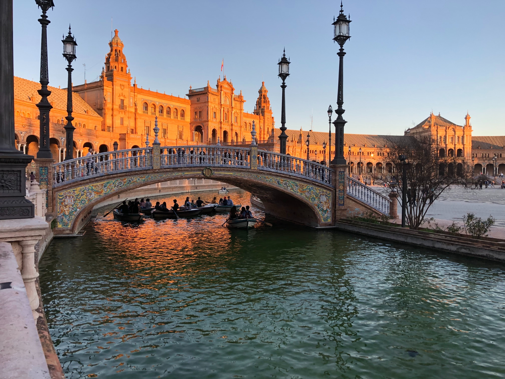

Sevilla: A Journey Through Time
Sevilla, Andalusia's radiant heart, is a city where history resonates at every corner. From its ancient Roman roots, through its luminous Islamic epoch, to its eventual embrace by the Spanish monarchy, Sevilla has been a silent witness to the rise and fall of great civilizations, each etching its unique legacy onto the city's soul.
Meandering through the labyrinthine lanes of Barrio Santa Cruz, once the vibrant Jewish quarter, I was enveloped by the profound echoes of the past. The majestic Giralda tower, which transitioned from a minaret to a cathedral bell tower, stands as a poignant symbol of Sevilla's diverse heritage. Embark with me on a journey through the intricate mosaic of Sevilla's history and cultural fabric.